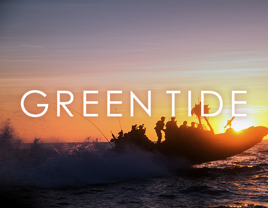

Original Concept By: David Perez, José Ramon García Paniagua & Miguel Molina
Date: January 7th 2016
Location: Canary Islands
Playable Side: Spain
Duration: 4 Days
After discovering a large oil field east of the Canary Islands in 2011, Spanish oil consortium Orta commenced construction of five major oil platforms in the channel between the Canarys and Morocco. The proximity of the field to Morocco has generated controversy amongst the public of both Spain and Morocco, and caused significant tension between the two countries.
In the past 6 months Morocco has been suffering internal political strife, with an unpopular government facing challenges from a raft of opposition parties. A major corruption scandal erupted last month, which coincided with the completion of the platforms. Sensing an opportunity to divert attention away from internal issues and seize a valuable national resource, the government of Morocco has laid claim to the Orta field and associated platforms, declaring an 'exclusion zone' around the platforms and mobilising naval forces to the area.
The Spanish government has just made an address to the United Nations declaring the Moroccan governments activities in relation to the Orta field illegal, and resolving to secure and protect the field and its associated platforms from foreign influence.